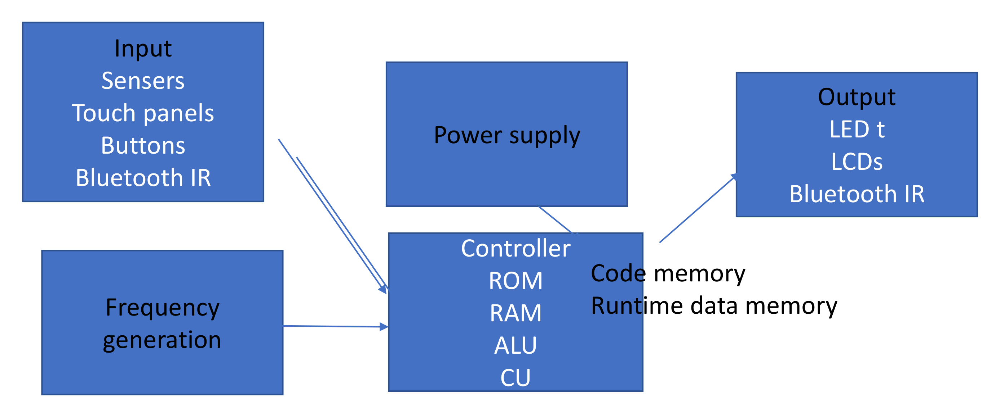

ข้อ 1
Lecture 1 (สไลด์ 3-8)
ความหมายและองค์ประกอบของ Embedded System
โจทย์ที่รุ่นพี่จำออกมา (ข้อความสีแดง):
1. Embedded System คืออะไร มีองค์ประกอบอะไรบ้าง
แนวทางคำตอบของรุ่นพี่ (ข้อความสีฟ้า - Draft):
- Microcontroller หรือระบบที่ใช้ microprocessor ที่ออกแบบมาทำงานเฉพาะอย่าง
- มี 3 องค์ประกอบ คือ 1. Hardware 2. Application Software 3. Real Time Operating System (RTOS)
เฉลยฉบับสมบูรณ์สำหรับใช้ตอบข้อสอบจริง (Official Answer)
คะแนนเต็ม 100%
1. นิยามของ Embedded System (ระบบสมองกลฝังตัว):
คือระบบคอมพิวเตอร์ (ที่ใช้ Microcontroller หรือ Microprocessor) ซึ่งถูกสร้างหรือ ฝังตัวอยู่ภายในผลิตภัณฑ์หรือระบบขนาดใหญ่ เพื่อทำหน้าที่ควบคุม ประมวลผล หรือทำงาน เฉพาะทางอย่างใดอย่างหนึ่งโดยเฉพาะ (Dedicated / Single-purpose Function) มักทำงานแบบเวลาจริง (Real-Time System) ที่ผลลัพธ์ต้องถูกต้องและทันเวลา (Deadline) ภายใต้ข้อจำกัดด้านทรัพยากร (พลังงาน, ขนาด, หน่วยความจำ, และต้นทุน)
2. องค์ประกอบหลัก 3 ส่วน (Building Blocks):
- ฮาร์ดแวร์ (Hardware): ชิปประมวลผล (MCU เช่น 8051), หน่วยความจำ (ROM/Flash เก็บโปรแกรม, RAM เก็บข้อมูล), พอร์ต I/O, ตัวนับเวลา (Timers), วงจรขัดจังหวะ (Interrupts), เซนเซอร์ (Sensors) และตัวขับกำลัง (Actuators)
- ซอฟต์แวร์ประยุกต์ (Application Software / Firmware):** ชุดคำสั่งโปรแกรมที่พัฒนาขึ้นมาเฉพาะทาง (เขียนด้วย Assembly หรือ C) เพื่อควบคุมลอจิกการทำงานของอุปกรณ์
- ระบบปฏิบัติการเวลาจริง (RTOS) / System Control:** ซอฟต์แวร์ระบบที่ทำหน้าที่บริหารจัดการ Task Scheduling, Timing, และตอบสนองต่อ Event ได้อย่างแม่นยำ (ในระบบขนาดเล็กอาจรันแบบ Bare-metal / Super-loop)

ไดอะแกรม Building Blocks of Embedded System (Lecture 1)
จุดที่มักโดนหักคะแนน / ข้อจำกัดของแนวคิดรุ่นพี่:
การเขียนตอบเพียงชื่อองค์ประกอบ 1-2-3 โดยไม่อธิบายขยายความหน้าที่ของ Hardware, Software, และ RTOS จะทำให้เสียคะแนนอธิบาย ควรระบุหน้าที่สั้นๆ ของแต่ละองค์ประกอบเสมอ